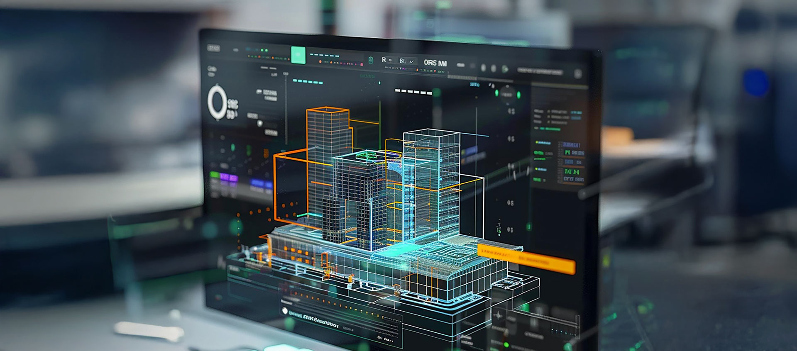

La continuidad operacional depende de estrategias de mantenimiento estructuradas, orientadas a prevenir fallas, reducir tiempos de inactividad y optimizar recursos.
RVMIA desarrolla programas de mantenimiento adaptados a la criticidad de cada instalación, integrando criterios HVAC, eléctricos, mecánicos y de automatización.

Mini Split, Cassette, Piso Techo, Multi Split y sistemas comerciales.
VRF, Fan Coil, UMA, Chillers y sistemas centrales.
PLC, sensores, controladores, BMS e infraestructura IIoT.
Complementamos nuestras actividades de mantenimiento con suministro de componentes, repuestos y materiales requeridos para garantizar la continuidad operacional.
Analizamos el estado actual de la infraestructura y proponemos estrategias orientadas a disponibilidad, eficiencia y sostenibilidad.
Solicitar Diagnóstico